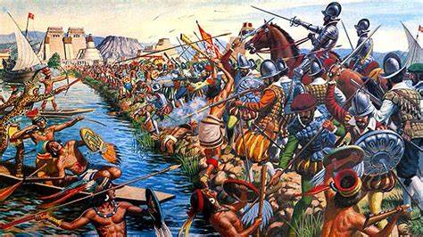

Texto: En 1519 Hernan Cortes llego a Veracruz. Con la ayuda de La Malinche como traductora y aliados tlaxcaltecas, logro conquistar Tenochtitlan en 1521. El ultimo emperador azteca fue Cuauhtemoc. Despues de la caida, empezo la epoca colonial que duro 300 años. Se construyeron iglesias sobre los templos aztecas.
| Año | Acontecimiento |
| 1519 | Llegada de Cortes |
| 1521 | Caida de Tenochtitlan |
| 1522 | Inicio de la Colonia |